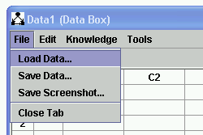
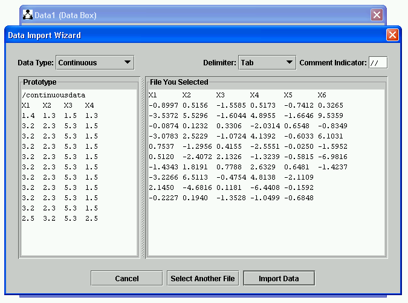
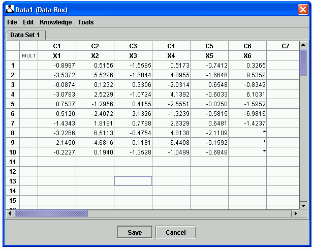

Loading Data |
To load data in Tetrad, first place a Data Box on the main workspace,
double click it, select "Data Box," and then in the Data Editor that appears, select "Load Data..." from the File menu.

In the file dialog that appears, select the file you want to load, click "Open." The file will be shown in the next dialog.

If it's not already selected for you, select the type of file you are trying to load ("Data Type"). A prototype for that type of file will be shown on the left; your file will be shown on the right. If it looks correct, click "Import Data." You data will be loaded into the Data Editor, and if you click "Save" will be saved as part of your session.

This general procedure will work for any type of data Tetrad uses, so long as the file format of the data is correct. These file formats differ, depending on the type of data (continuous data, discrete data, covariance/correlation matrix). Here are links to explanations for the formats for each of these:
Currently, there is no reason to load time series data into Tetrad, since there are no search or estimation procedures that operate only on this type of data. There is a specialized simulator for Boolean Glass data, which produces time series data. This data can be saved and used in other programs.
You can import any tab delimited data . The data file needs a one line header:
For data for continuous variables, which must be numeric the header line is:
/continuous
For data for discrete variables, which can be alphanumeric, the header line is:
/discrete
For a lower triangular covariance or correlation matrix, the header is:
/covariance
You must also include a row with the names of the variables in the appropriate order for the data file or covariance matrix.
For example, if you write a EXCEL file:with the names of variables in the first row, and save it as a text file, for example:
/continuous
X1 X2 X3
4 2 1
2 5 0.09
and in the File menu above the Tetrad data sheet click ":Load." Any previous data is erased and you see:

| Note that the variable names occur in the correct place at the top of each column. It is essential that the first row of the data file you wish to import contain the variable names, tab delimited. Also, do not include empty spaces between rows. A data file does not require that any other boxes have flowgraph edges directed into it. A standalone Data box can be used to import an external data file. A data file can be saved by opening the "File" tab and clicking "Save." It can be reloaded just as can any imported file. Inside a Tetrad data sheet you can use the mouse to select individual cells, rows or columns. (To select more than one column or row, hold down the shift key). Then, by opening the Edit tab, you can copy, delete or insert cells, rows and columns. For example, you can select the X2 column in the picture above, copy it, select a new empty column, and paste a copy of the selected column in the new column. The Manip tab in the Tetrad data sheet permits simple manipulations of the data. Other data manipulations use the Manipulate Data box. 1. Continuous data can be projected to a set of discrete values. For example if you select all of the colunms in a data sheet |